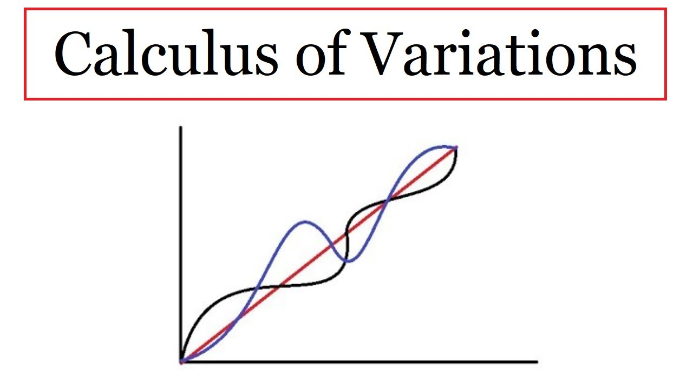

Méthodes Variationnelles
Les méthodes variationnelles sont des techniques mathématiques puissantes utilisées pour approximer les solutions d'équations différentielles et d'autres problèmes d'optimisation.
L'idée centrale des méthodes variationnelles est de transformer le problème en une formulation variationnelle. On cherche alors la fonction qui minimise (ou maximise) une certaine fonctionnelle. Cette fonctionnelle représente l'écart entre la solution approchée et la solution exacte du problème.
Avantages
- Simplicité d'utilisation : Les méthodes variationnelles sont souvent plus simples à mettre en œuvre que d'autres méthodes numériques.
- Flexibilité : Elles peuvent être appliquées à une grande variété de problèmes, y compris ceux avec des conditions aux limites complexes.
- Robustesse : Elles sont généralement robustes et peuvent fournir des solutions précises même pour des problèmes difficiles.
Inconvénients
- Convergence : La convergence des méthodes variationnelles peut être lente dans certains cas.
- Choix de la fonctionnelle : Le choix de la fonctionnelle peut influencer la précision de la solution approchée.
Applications
Les méthodes variationnelles sont utilisées dans de nombreux domaines, notamment :
- Physique : Calcul des états quantiques des molécules et des atomes, résolution d'équations aux dérivées partielles en mécanique des fluides et en électromagnétisme.
- Ingénierie : Optimisation de structures et de systèmes, simulation de phénomènes physiques complexes.
- Mathématiques : Étude d'équations différentielles et d'équations aux dérivées partielles, résolution de problèmes d'optimisation non linéaire.
Exemples
- Méthode de Rayleigh-Ritz : Utilisée pour approximer les valeurs propres et les vecteurs propres d'un opérateur linéaire.
- Méthode des éléments finis : Utilisée pour résoudre des équations aux dérivées partielles sur des domaines complexes.
Les méthodes variationnelles constituent un outil puissant et polyvalent pour approximer les solutions de problèmes mathématiques complexes. Elles sont utilisées dans de nombreux domaines scientifiques et d'ingénierie, et leur simplicité d'utilisation et leur flexibilité en font un choix attrayant pour la résolution de nombreux types de problèmes.